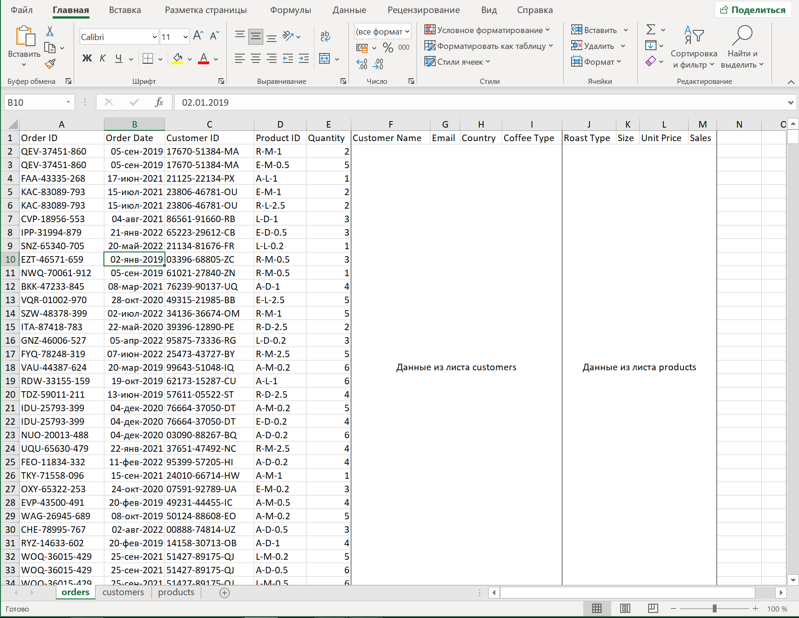
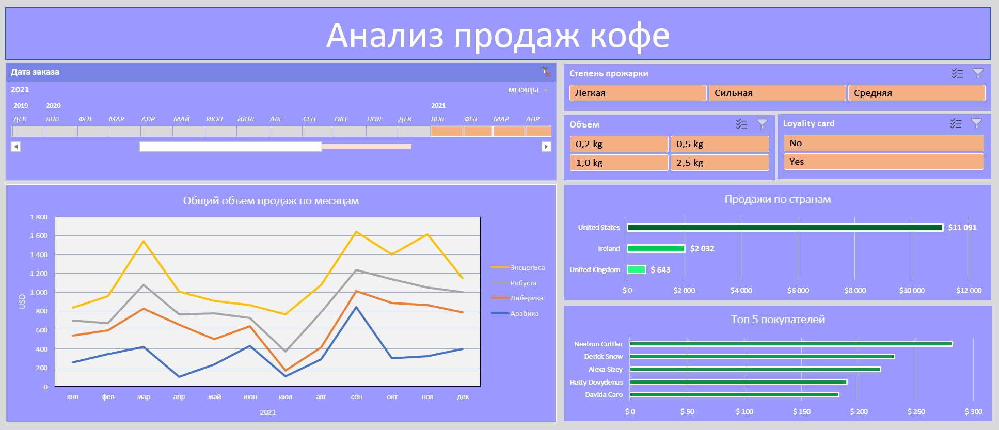

Project Details
Цель
Наша задача собрать интерактивный дашборд с интуитивно понятной фильтрацией по основным критиериям. Дашборд должен отвечать на вопросы заказчика (см. в разделе Анализ).
Для этого мы проведем анализ и предобработку данных о заказах (orders), покупателях (customers) и продуктах (products) из листов Excel для дальнейшей работы.
Скачать с GitHub!Предобработка
Исходные датасеты разнесены по листам (orders, customers, products). Для удобства работы мы объединим данные в один лист используя "ПРОСМОТРХ", комбинацию ИНДЕКС-ПОИСКПОЗ и соответсвующие уникальные ключи. Для пары orders-customers ключ-Customer ID, для orders-products ключ-Product ID.
Рисунок 1. Это изображение показывает исходный вид данных до объединения датасетов.
Перед началом работы была проведена подготовка данных для правильной интерпретации информации и переносе ее на визуализацию.
А именно:
Рисунок 2. Изображение показывает подготовленный датасет.
Выше проведенные шаги существенно упростят работу с данными и увеличат точность итоговых результатов.
Анализ
Теперь имея подготовленные данные мы можем провести разведочный анализ для получения инсайтов и закономерностей в исследуемых данных.
Вопросы со стороны заказчика:
- Сказывается ли наличие карты лояльности на стоимость покупки?
- Какой объем товара предпочитаю покупатели? По странам есть различие?
- Какую степень обжарки покупают чаще? По странам есть различие?
- Кагда наступает сезонный спад/подъем?
- Есть ли взаимосвязь между типом кофе и сезонностью?
- Наблюдаются ли тенеденции к подъему/снижению по продажам?
- В какие месяцы нарушается сезонность? почему?
- На какие три месяца в году приходятся самые большие продажи?
- Кто входит в Топ-5 покупателей товаров определенного типа?
Отвечая на эти вопросы, бизнес в лице заказчика может улучшить понимание его идеального покупателя и скорректировать маркетинговые стратегии для увеличения прибыли компании.
Исследование данных
Мы начнем сегментацию пользователей по типу и объему заказа, местоположению, наличию карты лояльности и так далее.
Я использовал объединенный датасет для создания сводных таблиц, основанных на различных критериях. На основе этих сводных таблиц я создал диаграммы, временные шкалы и срезы.

Рисунок 3. Изображение показывает сводные таблицы, диаграммы и срезы.
Для удобного восприятия информации в целом, я создал дашборд, который отображает все диаграммы и вспомогательные блоки, такие как временная шкала, срезы по типам продукции и объему упаковки. Такой подход позволяет собирать нужные конфигурации отображения данных.
Рисунок 4. Изображение показывает собранный дашборд.
Ключевые результаты
Используя дашборд, мы смогли получить следующую информацию:
- Товар: В феврале 2022 года произошел обвал по продажам всех разновидностей кофе кроме Арабики.
- Товар: Обвал в феврале 2022 года никак не сказался на упаковке 0,2 кг в отличии от остальных.
- Сезонность: Из года в год сезонность подвержена внешним факторам. Паттерн сезонности сквозь года ломается.
- Местоположение: Покупатели из Великобритании в течение 2022 года не пользовались картами лояльности. За другие периоды такого не наблюдалось.
- Местоположение: Покупатели из Великобритании за период 2021-2022 года практически не покупали кофе в упаковках 0,2 кг.
- Продажи: самые большие продажи приходятся на февраль, июнь и октябрь.
- Товар: существенных различий при выборе степени обработки кофе не выявлено.
Рекомендации
Основываясь на этих выводах, бизнес может реализовать следующие действенные шаги для улучшения продаж:
- Самые большие продажи в году выпадают на февраль, июнь и октябрь. К этим датам бизнес может подготовится, например заблаговременно закупив больше товара, а правльно продуманные акции позволят увеличить продажи и прибыль.
- На протяжении исследуемого периода наблюдались обвалы продаж, связанные с сезонностью. Стоит рассмотреть возможность диверсифекации поставщиков.
- Покупатели из Великобритании в 2022 году не использовали карты лояльности. Необходимо сообщить в отдел маркетинга для выяснения обстоятельств.
- Покупатели из Великобритании за период 2021-2022 годов практически не покупали кофе в упаковках 0,2 кг. Отделу маркетинга необходимо разработать соответствующие акции, направленные на увеличение продаж указанного объема в стране.
В заключение, эти результаты дают ценную информацию как на основе исторических данных, так и на основе текущего состояния рынка. Реализуя рекомендации, бизнес может улучшить продажи и лучше удовлетворять потребности и интересы своего целевого рынка.